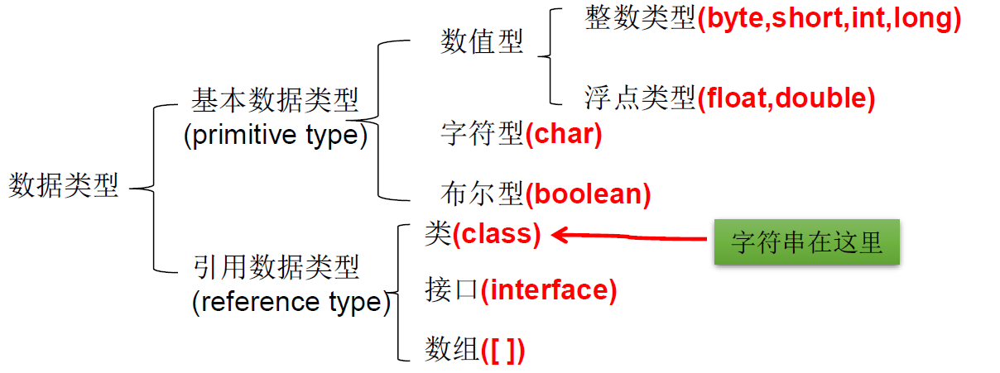
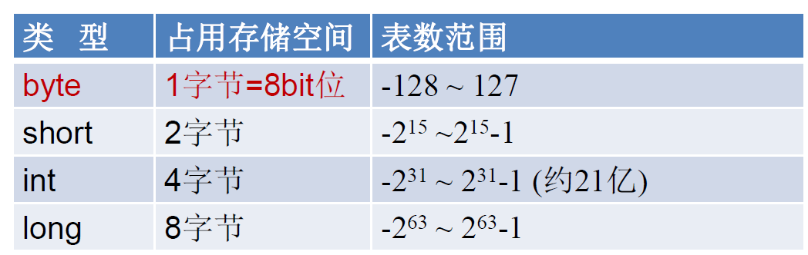
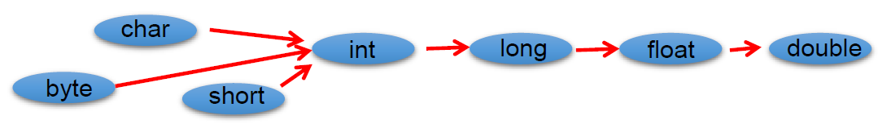
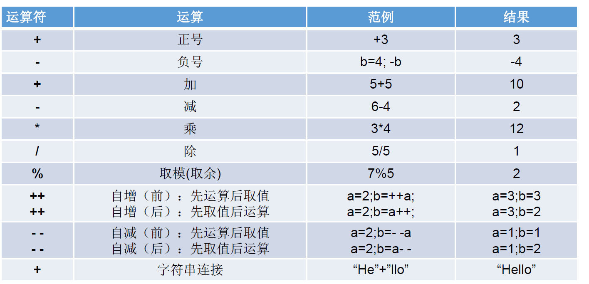
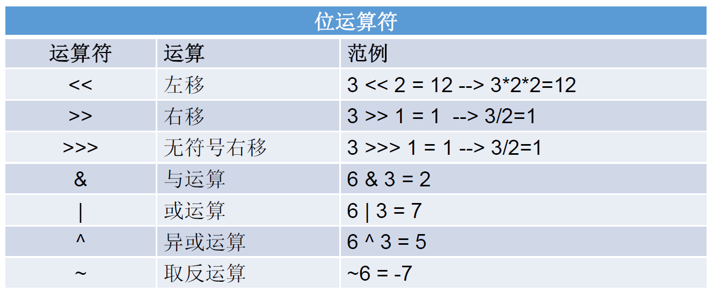
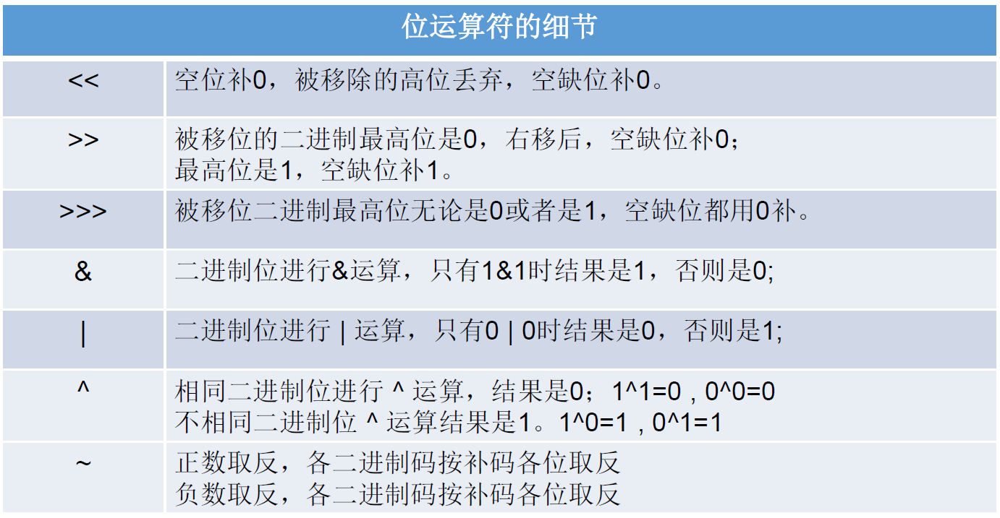
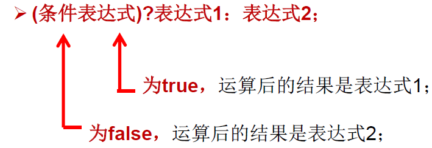
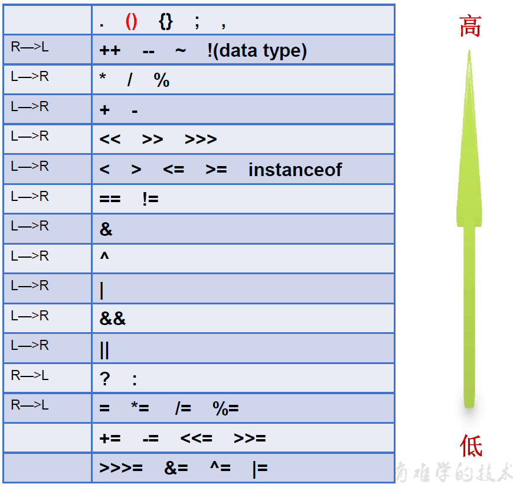

课程：宋红康 JAVA
注释
// 单行注释
/* 多行注释 */
/**
文档注释
@author 指定Java程序的作者
@version 指定源文件的版本
*/
变量与运算符
关键字与保留字
- 关键字（keyword）
- 定义：被 Java 语言赋予了特殊含义，用做专门用途的字符串(单词)
- 特点：关键字中所有字母都为小写
- 例如：class，interface，long，if，else，return，public，new
- 保留字（reserved word）
- 定义：现有 Java 版本尚未使用，但以后版本可能会作为关键字使用
- 例如：goto、const
- 关键字（keyword）
标识符（identifier）
- 定义：Java 对各种变量、方法和类等要素命名时使用的字符序列称为标识符。凡是自己可以起名字的地方都叫标识符。
- 定义合法标识符的规则：
- 由 26 个英文字母大小写，0-9，或$组成
- 数字不可以开头。
- 不可以使用关键字和保留字，但能包含关键字和保留字。
- Java 中严格区分大小写，长度无限制。
- 标识符不能包含空格。
- 定义规范的标识符
- 包名:多单词组成时所有字母都小写：xxxyyyzzz
- **类名、接口名:**多单词组成时，所有单词的首字母大写：XxxYyyZzz
- 变量名、方法名:多单词组成时，第一个单词首字母小写，第二个单词开始每个单词首字母大写：xxxYyyZzz .
- **常量名:所有字母都大写。多单词时每个单词用下划线连接： XXX YYY ZZZ
变量（variable）
- 变量的概念: .
- 内存中的一个存储区域
- 该区域的数据可以在同一类型范围内不断变化
- 变量是程序中最基本的存储单元。包含变量类型、变量名和存储的值
- 变量的作用：用于在内存中保存数据
- 使用变量主要：
- Java 中每个变量必须先声明，后使用
- 使用变量名来访问这块区域的数据
- 变量的作用域：其定义所在的一对 { } 内
- 变量只有在其作用域内才有效
- 同一个作用域内，不能定义重名的变量
- 变量的声明：数据类型 变量名称 如：int age； Student student
- 变量的赋值：变量名称 = 值 如：age =23； student = new Student（）
- 变量的声明和赋值： 数据类型 变量名称 = 值 如： int age = 23 ； Student student = new Student（）
变量的分类
按照数据类型分
对于每一种数据都定义了明确的具体数据类型(强类型语言)，在内存中分配了不同大小的内存空间。
整数类型
Java 各整数类型有固定的表数范围和字段长度，不受具体 OS 的影响，以保证 java 程序的可移植性。(在 C 语言中不同的 OS，整数的长度还不一样)
java 的整型常量默认为 int 型，声明 long 型常量须后加”I“或 “L”
java 程序中变量通常声明为 int 型，除非不足以表示较大的数，才使用 long

浮点型
与整数类型类似，Java 浮点类型也有固定的表数范围和字段长度，不受具体操作系统的影响。
浮点型常量有两种表示形式:
- 十进制数形式:如: 5.12 512.0f .512 (必须有小数点)
- 科学计数法形式:如: 5.12e2 512E2 100E-2
float:单精度，尾数可以精确到 7 位有效数字。很多情况下，精度很难满足需求。
double:双精度，精度是 float 的两倍。通常采用此类型。
Java 的浮点型常量默认为 double 型，声明 float 型常量，须后加‘f’或 ‘F’。
字符类型（char）
char 型数据用来表示通常意义上“字符”(2 字节)
Java 中的所有字符都使用 Unicode 编码，故一个字符可以存储一个字母，一个汉字，或其他书面语的一个字符。
字符型变量的三种表现形式:
字符常量是用单引号
'括起来的单个字符。例如: charc1 = ‘a’; char c2=’中”; char c3 = ‘9’;Java 中还允许使用**转义字符‘\’ **来将其后的字符转变为特殊字符型常量。
例如: char c3=“\n’;（表示换行符）
直接使用Unicode 值来表示字符型常量:‘\uXXXX’。 其中，XXXX 代表一个十六进制整数。
如: \u000a 表示\n
char 类型是可以进行运算的。因为它都对应有 Unicode 码
- ASCII 码：
- 在计算机内部，所有数据都使用二进制表示。每一个二进制位(bit) 有 0 和 1 两种状态，因此 8 个二进制位就可以组合出 256 种状态，这被称为一个字节(byte) 。一个字节一共可以用来表示 256 种不同的状态，每-一个状态对应一个符号，就是 256 个符号，从 0000000 到 11111111。
- ASCII 码：上个世纪 60 年代，美国制定了一套字符编码，对英语字符与二进制位之间的关系，做了统一规定。这被称为 ASCII 码。ASCII 码一共规定了 128 个字符的编码，比如空格“SPACE”是 32(二进制 00100000)，大写的字母 A 是 65(二进制 01000001)。这 128 个符号(包括 32 个不能打印出来的控制符号)，只占用了一个字节的后面 7 位，最前面的 1 位统一规定为 0。
- 缺点:
- 不能表示所有字符。
- 相同的编码表示的字符不一样：比如，130 在法语编码中代表了 e，在希伯来语编码中却代表了字母 Gimel (2)
- Unicode 编码
- 乱码：世界上存在着多种编码方式，同一个二进制数字可以被解释成不同的符号。因此，要想打开一个文本文件，就必须知道它的编码方式，否则用错误的编码方式解读,就会出现乱码。
- Unicode： 一种编码，将世界上所有的符号都纳入其中。每一个符号都给予一个独一无二的编码，使用 Unicode 没有乱码的问题。
- Unicode 的缺点：
- Unicode 只规定了符号的二进制代码，却没有规定这个二进制代码应该如何存储
- 无法区别 Unicode 和 ASCII
- 计算机无法区分三个字节表示一个符号还是分别表示三个符号。
- 另外，我们知道，英文字母只用一个字节表示就够了，如果 unicode 统一规定， 每个符号用三个或四个字节表示，那么每个英文字母前都必然有二到三个字节是 0，这对于存储空间来说是极大的浪费。
- UTF-8
- UTF-8 是在互联网上使用最广的一种 Unicode 的实现方式。
- UTF-8 是一种变长的编码方式。它可以使用 1-6 个字节表示一个符号，根据不同的符号而变化字节长度。
- UTF-8 的编码规则:
- 对于单字节的 UTF-8 编码，该字节的最高位为 0，其余 7 位用来对字符进行编码(等同于 ASCII 码)。
- 对于多字节的 UTF-8 编码，如果编码包含 n 个字节，那么第一个字节的前 n 位为 1，第一个字节的第 n+1 位为 0，该字节的剩余各位用来对字符进行编码。在第一个字节之后的所有的字节，都是最高两位为”10”，其余 6 位用来对字符进行编码。
布尔型（false/true）
- boolean 类型数据只允许取值 true 和 false，无 null
- boolean 类型用来判断逻辑条件，一般用于程序流程控制
基本数据类型的转换
- 自动类型转换：容量小的类型自动转换成容量大的数据类型
- byte、short、char 之间不会相互转换，他们三者计算时首先会转成 int 类型
- Boolean 类型不会和其他类型进行计算
- 当把任何基本数据类型的值和字符串(String)进行连接运算时(+)，基本数据类型的值将自动转化为字符串(String)类型。
- 强制类型转换
- 自动类型转换的逆过程，将容量大的数据类型转换为容量小的数据类型。使用时要加上强制转换符:**( )**，但可能造成精度降低或溢出,格外要注意。
- 通常，字符串不能直接转换为基本类型，但通过基本类型对应的包装类则可以实现把字符串转换成基本类型。如: String a=“43”; int i= Integer.parselnt(a);
- boolean 类型不可以转换为其它的数据类型。
运算符
算术运算符
如果对负数取模，可以把模数负号忽略不记，如: 5%-2=1。 但被模数是负数则不可忽略。此外，取模运算的结果不一定总是整数。
++a 和 a++要看作一个整体，++a 表示先让 a 自增 1，然后才能运算，a++表示先让 a 运算，再让 a 自增 1
赋值运算符：=
赋值运算符 符号解释 举例 = 将符号右边的值，赋值给左边的变量 += 将符号左边的值和右边的值进行相加操作，最后将结果赋值给左边的变量 b += a 相当于 b = b + a -= 将符号左边的值和右边的值进行相减操作，最后将结果赋值给左边的变量 *= 将符号左边的值和右边的值进行相乘操作，最后将结果赋值给左边的变量 /= 将符号左边的值和右边的值进行相除操作，最后将结果赋值给左边的变量 %= 将符号左边的值和右边的值进行取余操作，最后将结果赋值给左边的变量 比较运算符（关系运算符）
关系运算符 符号解释 < 比较符号左边的数据是否小于右边的数据，如果小于结果是 true。 > 比较符号左边的数据是否大于右边的数据，如果大于结果是 true。 <= 比较符号左边的数据是否小于或者等于右边的数据，如果大于结果是 false。 >= 比较符号左边的数据是否大于或者等于右边的数据，如果小于结果是 false。 == 比较符号两边数据是否相等，相等结果是 true。 ！= 不等于符号 ，如果符号两边的数据不相等，结果是 true。 逻辑运算符
逻辑运算符 符号解释 符号特点 & 与，且 有 false 则 false | 或 有 true 则 true ^ 异或 相同为 false，不同为 true ! 非 非 false 则 true，非 true 则 false && 双与，短路与 左边为 false，则右边就不看 || 双或，短路或 左边为 true，则右边就不看 - 逻辑运算符，是用来连接两个布尔类型结果的运算符（!除外），运算结果一定是 boolean 值 true 或者 false
- &&和&区别，||和|区别
- **&&和&**区别：&&和&结果一样，&&有短路效果，左边为 false，右边不执行；&左边无论是什么，右边都会执行。
- **||和|**区别：||和|结果一样，||有短路效果，左边为 true，右边不执行；|左边无论是什么，右边都会执行。
位运算符
没有<<<这种情况
位运算符是直接对整数的二进制经行运算的
运算规则
左移：<<：左移几位就相当于乘以 2 的几次方
右移：>>：右移几位就相当于除以 2 的几次方
无符号右移：>>>：运算规则：往右移动后，左边空出来的位直接补 0，不看符号位
按位与：&
1 & 1 结果为 1
1 & 0 结果为 0
0 & 1 结果为 0
0 & 0 结果为 0
按位或：|
1 | 1 结果为 1
1 | 0 结果为 1
0 | 1 结果为 1
0 & 0 结果为 0
按位异或：^
1 ^ 1 结果为 0
1 ^ 0 结果为 1
0 ^ 1 结果为 1
0 ^ 0 结果为 0
按位取反：~
~0 就是 1
~1 就是 0
位运算符的细节

三元运算符
运算符的优先级

程序流程控制
顺序结构：就是程序从上到下逐行地执行，中间没有任何判断和跳转
分支结构：
// 1 if-else /* boolean flag; if(flag){ // 为true执行 } if(flag){ // }else{ // } if(flag){ }else if(){ }else{ } */ // 2.switch-case /* switch(表达式){ case 常量值1: 语句块1; 【break;】 case 常量值2: 语句块2; 【break;】 。。。 【default: 语句块n+1; 【break;】 】 } switch(表达式)中表达式的值必须是下述几种类型之一: byte, short,char, int, 枚举(jdk 5.0)，String (jdk 7.0); case子句中的值必须是常量，不能是变量名或不确定的表达式值; 同一个switch语句，所有case子句中的常量值互不相同; . break语句用来在执行完一个case分支后使程序跳出switch语句块；如果没有break，程序会顺序执行到switch结尾 default子句是可任选的。同时，位置也是灵活的。当没有匹配的case时，执行default */ public class Test { public static void main(String args[]){ //char grade = args[0].charAt(0); char grade = 'C'; switch(grade) { case 'A' : System.out.println("优秀"); break; case 'B' : case 'C' : System.out.println("良好"); break; case 'D' : System.out.println("及格"); break; case 'F' : System.out.println("你需要再努力努力"); break; default : System.out.println("未知等级"); } System.out.println("你的等级是 " + grade); } }循环结构
/* 1. 格式 for(初始化语句①; 循环条件语句②; 迭代语句④){ 循环体语句③ } ②循环条件部分为boolean|类型表达式，当值为false时，退出循环 ①初始化部分可以声明多个变量，但必须是同一个类型，用逗号分隔 ④可以有多个变量更新，用逗号分隔 2. 死循环 for(;;){ 循环体语句块；//如果循环体中没有跳出循环体的语句，那么就是死循环 } */ /* ①. 格式 while (循环条件语句 ①) { 循环体语句 ②； } ②. 死循环 while(true){ 循环体语句;//如果此时循环体中没有跳出循环的语句，也是死循环 } */ /* ①. 格式 do { 循环体语句 ①； } while (循环条件语句 ②)； 循环体语句至少执行一次 */
原码，反码和补码
机器数和真值
- 机器数：一个数在计算机中的二进制表示形式, 叫做这个数的机器数。机器数是带符号的，在计算机用一个数的最高位存放符号, 正数为 0, 负数为 1。
- 真值：因为第一位是符号位，所以机器数的形式值就不等于真正的数值。例如上面的有符号数
10000011，其最高位 1 代表负，其真正数值是 -3 而不是形式值 131（10000011 转换成十进制等于 131）。所以，为区别起见，将带符号位的机器数对应的真正数值称为机器数的真值。
原码, 反码, 补码的基础概念和计算方法.
原码：原码就是符号位加上真值的绝对值, 即用第一位表示符号, 其余位表示值. 比如如果是 8 位二进制:
[+1]原= 0000 0001
[-1]原= 1000 0001
反码：
正数的反码是其本身
负数的反码是在其原码的基础上, 符号位不变，其余各个位取反.
[+1] = [00000001]原 = [00000001]反
[-1] = [10000001]原 = [11111110]反
[-127 , 127]
补码：计算机存储的就是补码
正数的补码就是其本身
负数的补码是在其原码的基础上, 符号位不变, 其余各位取反, 最后+1. (即在反码的基础上+1)
[+1] = [00000001]原 = [00000001]反 = [00000001]补
[-1] = [10000001]原 = [11111110]反 = [11111111]补
为何要使用原码, 反码和补码
对应人脑而言，识别符号位是非常简单的，但是对应电脑而言，让计算机辨别”符号位”显然会让计算机的基础电路设计变得十分复杂。于是人们想出了将符号位也参与运算的方法，我们知道, 根据运算法则减去一个正数等于加上一个负数, 即: 1-1 = 1 + (-1) = 0 。但如果用原码直接去计算是会出错。
1 - 1 = 1 + (-1) = [00000001]原 + [10000001]原 = [10000010]原 = -2
为了解决原码出错的问题，人们就设计了反码：
1 - 1 = 1 + (-1)
= [0000 0001]原 + [1000 0001]原
= [0000 0001]反 + [1111 1110]反
= [1111 1111]反
= [1000 0000]原
= -0
发现用反码计算减法, 结果的真值部分是正确的。而唯一的问题其实就出现在”0”这个特殊的数值上。 虽然人们理解上+0 和-0 是一样的, 但是 0 带符号是没有任何意义的. 而且会有[0000 0000]原和[1000 0000]原两个编码表示 0。
于是补码的出现, 解决了 0 的符号以及两个编码的问题：
1-1 = 1 + (-1)
= [0000 0001]原 + [1000 0001]原
= [0000 0001]补 + [1111 1111]补
= [0000 0000]补=[0000 0000]原
这样 0 用[0000 0000]表示, 而以前出现问题的-0 则不存在了。而且可以用[1000 0000]表示-128:
转载请注明来源，欢迎对文章中的引用来源进行考证，欢迎指出任何有错误或不够清晰的表达。可以在下面评论区评论，也可以邮件至 1909773034@qq.com